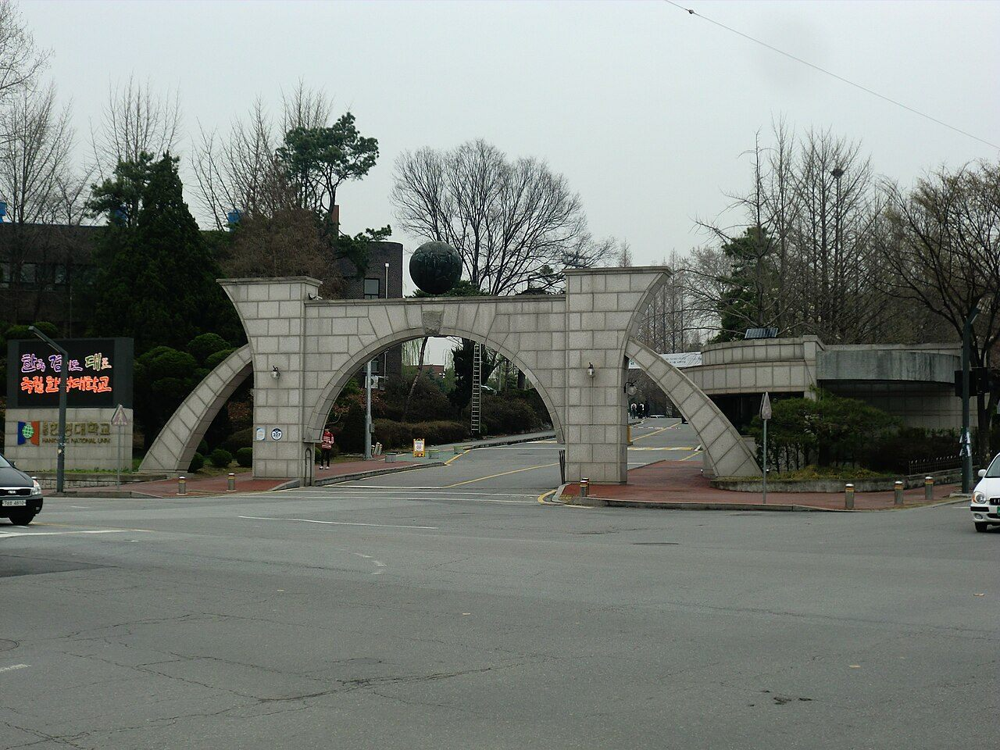

한경국립대학교는 경기도 안성시와 평택시에 캠퍼스를 둔 국립대학입니다. 뿌리가 1939년까지 올라가는 한경대학교와, 2002년에 문을 연 한국복지대학교가 통합해 2023년 3월 지금의 이름으로 출범했습니다. 그래서 한 대학이지만 성격이 꽤 다른 두 캠퍼스를 함께 운영합니다.
2027학년도 수시 원서접수는 2026년 9월 7일부터 9월 11일까지로 이미 마감됐습니다. 그래서 오늘 이 글을 읽으실 분은 대부분 고1·고2 학부모님이실 것입니다. 지금 보실 것은 경쟁률이 아니라 이 대학의 전형이 어떻게 생겼는지입니다. 특히 한경국립대는 같은 이름의 전형인데 캠퍼스에 따라 조건이 갈리는 대학이라, 구조를 모르고 보면 헷갈리기 쉽습니다.
한 대학, 두 캠퍼스 — 안성과 평택
가장 먼저 잡고 가실 것이 이것입니다. 한경국립대는 안성캠퍼스와 평택캠퍼스로 나뉘고, 모집단위도 전형 조건도 캠퍼스별로 따로 안내됩니다.
- 안성캠퍼스 — 옛 한경대학교 자리입니다. 그동안 IT·반도체와 농업에너지 쪽을 특성화 방향으로 내세워 왔습니다. 모집 규모가 큰 쪽도 이 캠퍼스입니다.
- 평택캠퍼스 — 옛 한국복지대학교 자리입니다. 장애학생을 비롯한 사회적 배려 계층의 고등교육을 함께 품는 방향으로 운영돼 온 캠퍼스입니다.
그래서 “한경국립대 학생부교과 일반전형”이라고만 검색하면 서로 다른 두 가지 안내가 섞여 나옵니다. 어느 캠퍼스의 어느 모집단위인지를 먼저 정하고 요강을 보셔야 합니다. 이 한 가지만 지켜도 혼동의 절반이 사라집니다.
※ 각 캠퍼스에 어떤 학과가 있는지, 모집단위별 세부 인원이 어떻게 나뉘는지는 이 글에서 확인하지 못해 적지 않았습니다. 학과 단위 확인은 입학처 요강이 정확합니다.
2027 수시 경쟁률은 10.08대 1, 지원자가 1만 명을 넘었습니다
이미 끝난 접수지만 숫자 하나는 짚고 가실 만합니다. 2027학년도 수시에서 한경국립대는 1,067명 모집에 10,758명이 지원해 10.08대 1을 기록했다고 보도됐습니다.
눈여겨보실 것은 경쟁률 자체보다 변화의 폭입니다. 직전 2026학년도에는 8,528명이 지원해 8.59대 1이었습니다. 한 해 사이에 지원자가 2,230명(약 26%) 늘었습니다.
학령인구가 줄어 많은 대학이 지원자 감소를 걱정하는 시기에 지원자가 한 해 만에 4분의 1 넘게 늘었다는 것은, 이 대학을 선택지에 올려 두는 수험생이 그만큼 늘었다는 뜻입니다. 고1·고2 가정이라면 경기권 국립대를 안전한 카드로만 보기는 어려워지고 있다는 정도로 읽으시면 됩니다.
다만 전형별·캠퍼스별·학과별 경쟁률은 확인하지 못해 이 글에 담지 않았습니다. 대학 전체 경쟁률과 내가 지원할 학과의 경쟁률은 전혀 다른 숫자입니다.
가장 큰 길은 학생부교과입니다 — 그런데 캠퍼스에 따라 수능최저가 갈립니다
한경국립대 수시에서 자리가 가장 넓은 갈래는 학생부교과입니다. 안성캠퍼스의 학생부교과 일반전형 하나만으로도 500명이 넘는 규모로 안내됐습니다. 내신으로 가는 길이 이 대학의 주된 통로라는 뜻입니다.
여기서 이 대학의 가장 중요한 특징이 나옵니다. 같은 ‘학생부교과 일반전형’인데 캠퍼스에 따라 수능최저학력기준이 다릅니다.
- 안성캠퍼스 학생부교과 일반전형 — 수능최저를 적용합니다. 국어·수학·영어·탐구 네 영역 가운데 2개 영역을 선택해 등급 합 8 이내로 안내됐습니다.
- 평택캠퍼스 학생부교과 일반전형 — 교과 100%로 선발하고 수능최저는 반영하지 않습니다.
- 학생부교과 지역균형선발 — 교과 100%, 수능최저 미반영입니다.
‘2개 영역 합 8’은 두 과목 평균이 4등급이면 닿는 기준입니다. 높은 문턱은 아닙니다. 그런데 수능을 아예 놓아 버린 학생에게는 닿지 않는 기준이기도 합니다. 해마다 내신은 충분한데 최저 한 줄 때문에 떨어지는 지원자가 나오는 자리가 정확히 여기입니다.
고1·고2 가정에 이 구조가 주는 지침은 단순합니다. 잘하는 두 영역을 끝까지 버리지 않는 것입니다. 네 과목을 고르게 끌어올리려다 전부 어중간해지는 것보다, 내가 쥘 수 있는 두 영역을 정해 4등급 안쪽을 확보해 두는 편이 이 대학의 교과 전형에는 훨씬 유효합니다.
다만 영어 영역을 등급 합 계산에 어떻게 넣는지, 탐구를 1과목만 보는지 2과목 평균으로 보는지, 모집단위에 따라 기준이 달라지는지는 확인하지 못해 이 글에 적지 않았습니다. 수능최저는 이 세부 조건 하나로 유불리가 완전히 바뀌므로 요강 확인이 꼭 필요합니다.
‘지역균형선발’은 비수도권의 ‘지역인재’와 다릅니다
한경국립대 전형표를 보시면 지역균형선발이라는 이름이 나옵니다. 요즘 뉴스에 자주 나오는 지역인재 전형과 헷갈리기 쉬운데, 둘은 전혀 다른 제도입니다.
- 지역인재 전형 — 비수도권 대학이 그 권역 고등학교를 나온 학생을 뽑는 제도입니다. 의대·약대·간호 쪽에서 비중이 큽니다. 경기도는 수도권이라 한경국립대에는 이 제도가 적용되지 않습니다.
- 지역균형선발 — 지역과 상관없이 학교별로 고르게 뽑자는 취지의 전형입니다. 보통 학교장추천이 따릅니다. 한경국립대에서는 교과 100%, 수능최저 미반영으로 안내됐습니다.
이 차이를 알아 두시면 전략이 달라집니다. 지역균형선발은 수능 없이 내신만으로 승부가 나는 자리입니다. 대신 학교 안에서 추천을 받아야 하므로, 고3 가을이 아니라 고1·고2 내신에서 이미 순위가 정해집니다.
지역인재 쪽을 함께 고민하고 계신 가정이라면 기준만 알아 두시면 됩니다. 2027학년도 지역인재 지원 자격은 해당 권역 고등학교에서 전 교육과정 3년을 이수한 학생이고, 중학교 과정까지 그 지역에서 다녀야 하는 강화된 요건은 2028학년도부터 적용됩니다.
다만 한경국립대 지역균형선발의 학교별 추천 가능 인원과 지원 자격 세부 조건, 모집 인원은 확인하지 못해 이 글에 담지 않았습니다.
학생부종합은 서류로 읽습니다 — 잠재력우수자와 사회통합
내신 등급만으로 설명되지 않는 학생을 위한 길이 학생부종합입니다. 한경국립대에는 잠재력우수자와 사회통합 두 갈래가 안내돼 있고, 둘 다 교과 성적과 비교과 활동을 함께 놓고 종합적으로 평가하는 방식입니다. 잠재력우수자 전형은 학생부 서류 평가 100%로 선발한다고 안내됐습니다.
서류 100%라는 말은 두 가지를 동시에 뜻합니다. 면접 부담이 없다는 뜻이면서, 생활기록부 한 권이 전부라는 뜻이기도 합니다. 그래서 이 전형을 보는 가정에서 지금 해야 할 일은 면접 연습이 아니라 남은 학기의 수업 활동입니다.
특히 평가자가 읽는 것은 활동의 화려함이 아니라 흐름입니다. 1학년에 궁금해한 것이 2학년 세부능력특기사항에 이어지고, 3학년 과목 선택으로 연결되는 학생이 가장 잘 읽힙니다. 반대로 학년마다 관심사가 전혀 다르고 활동만 많은 생활기록부는 서류 100% 전형에서 설명할 기회조차 없습니다.
특수교육대상자 전형은 성격이 다릅니다. 이 전형은 교과 60% + 면접 40%로 안내돼 있어, 한경국립대 수시에서 면접이 들어가는 몇 안 되는 자리입니다. 평택캠퍼스의 성격과 이어지는 전형이기도 합니다.
다만 각 전형의 모집 인원, 서류평가 항목과 반영 비율, 사회통합전형의 지원 자격, 면접 방식과 시간은 확인하지 못해 이 글에 적지 않았습니다.
지원 전 체크리스트
- 어느 캠퍼스인가. 안성인지 평택인지에 따라 같은 이름의 전형도 조건이 다릅니다. 이것부터 정하고 요강을 보세요.
- 수능 두 영역을 쥐고 있는가. 안성 학생부교과 일반전형은 2개 영역 합 8이 걸립니다. 평택과 지역균형선발은 걸리지 않습니다.
- 학교장추천을 받을 수 있는가. 지역균형선발은 교내에서 먼저 순위가 정해집니다. 고1·고2 내신이 자격을 만듭니다.
- 생활기록부에 흐름이 있는가. 잠재력우수자는 서류 100%입니다. 말로 보완할 기회가 없습니다.
- 지역인재와 혼동하고 있지 않은가. 경기도는 수도권이라 지역인재 전형 대상이 아닙니다.
- 수능 날짜. 2027학년도 수능은 2026년 11월 19일입니다.
마무리하며
한경국립대학교의 2027학년도 수시를 한 줄로 줄이면 이렇습니다. 내신으로 가는 길이 가장 넓고, 수능최저가 걸리는 자리는 안성캠퍼스의 교과 일반전형 쪽이며, 평택과 지역균형선발은 내신만으로 열려 있다.
고1·고2 가정에 주는 지침도 그만큼 단순합니다. 내신이 먼저이고, 수능은 두 영역입니다. 교과 전형을 주력으로 본다면 전 과목을 고르게 올리는 데 힘을 쓰되, 수능은 욕심내지 말고 자신 있는 두 영역에서 4등급 안쪽을 지켜 두는 쪽이 현실적입니다. 서류로 가실 생각이라면 남은 학기의 수업 활동과 과목 선택이 전부입니다.
가장 피해야 할 것은 아무것도 정하지 않은 채 내신·수능·비교과를 조금씩 하는 것입니다. 지원자가 한 해에 26% 늘어난 대학에서 어중간한 준비는 들어갈 문을 찾기 어렵습니다.
와와 학습코칭센터에서는 아이의 학년과 성적 흐름에 맞춰 목표 대학과 전형을 함께 정리해 드립니다. 교과로 갈지 서류로 갈지, 수능최저를 챙길지부터 막막하시다면 가까운 센터에서 상담을 신청해 보세요.
※ 본 글은 한경국립대학교 2027학년도 대학입학전형 관련 공개 자료와 언론 보도를 바탕으로 정리했습니다. 인용한 모집 인원·경쟁률과 전형 방법은 보도 시점에 발표된 내용입니다. 캠퍼스별 모집단위와 세부 모집 인원, 전형별 모집 인원, 수능최저의 영어·탐구 반영 방식과 모집단위별 차등 적용 여부, 교과 성적 반영 교과·과목 수와 등급 환산 방식, 진로선택과목 반영 방법, 지역균형선발의 추천 인원과 지원 자격, 학생부종합 서류평가의 항목별 비율, 사회통합·특수교육대상자 등 특별전형의 지원 자격, 면접 방식과 시간, 전형별·학과별 경쟁률, 장학금 제도는 확인하지 못해 이 글에 담지 않았습니다. 확인되지 않은 숫자와 기준은 기재하지 않았습니다. 사진은 2015년 4월에 촬영된 것으로 교명 변경 이전의 모습이며 현재와 다를 수 있습니다. 세부 사항은 모집요강에서 확정되며 변경될 수 있으므로, 반드시 한경국립대학교 입학처의 2027학년도 수시모집요강 원문에서 본인 지원 모집단위 기준으로 최종 확인하시기 바랍니다.